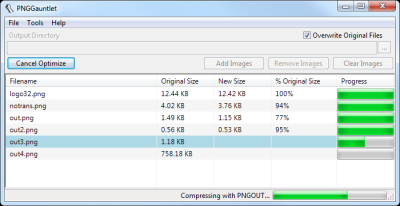
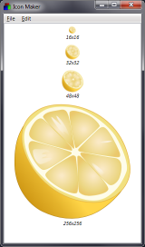

Creating an ICO icon file for your Windows app
• http://joshua.poehls.me/2014/creating-an-ico-icon-file-for-your-windows-app/
Every Windows app needs an icon. Even yours.
If you are a developer then this task probably sounds simpler than it may turn out to be. First off, a lot of graphics programs (Paint.NET, for example) don’t support saving as an ICO file, the format needed by Windows.
Don’t sweat. I’ve got you covered. Here is the developer cheat sheet for creating an app icon file.
Pro tip: ICO files can contain multiple icons. Often they will contain multiple versions of the same icon in different sizes. For example, a 64px and a 16px icon, each optimized for their respective size.
Wikipedia has a lot more interesting info on the ICO format.
- Create your icon. Make it square. Make it high res. Remember, you can always size down but it is harder to size up. I like to go with a minimum of 256px.
- Export your icon to PNG files at multiple sizes. My minimum recommendation would be the following: 16px, 32px, 48px, 64px, 96px.
- Use PNGGauntlet or PNGOut to compress those PNGs. You won’t lose quality but you will shed a lot of wasted bytes.
 - Use Icon Maker to create your ICO file. Windows supports a single ICO file with multiple sizes embedded and that’s what we want to do. Create a single ICO file with each of your specifically sized PNGs in it. You could also just drag in the largest PNG (96px for example) and trust Windows to resize it nicely.
 - Save out the ICO file and use it in your application.
That’s it! The biggest trick is knowing the tools. Icon Maker is a life saver. You should also understand what size icon(s) to use so that your app is well represented throughout the Windows UI. There is a good thread on StackOverflow with more details on this.
I’m not an expert in this area so I’m sure there are things I’m missing to further optimize your icon. Add any of your own tips in the comments!